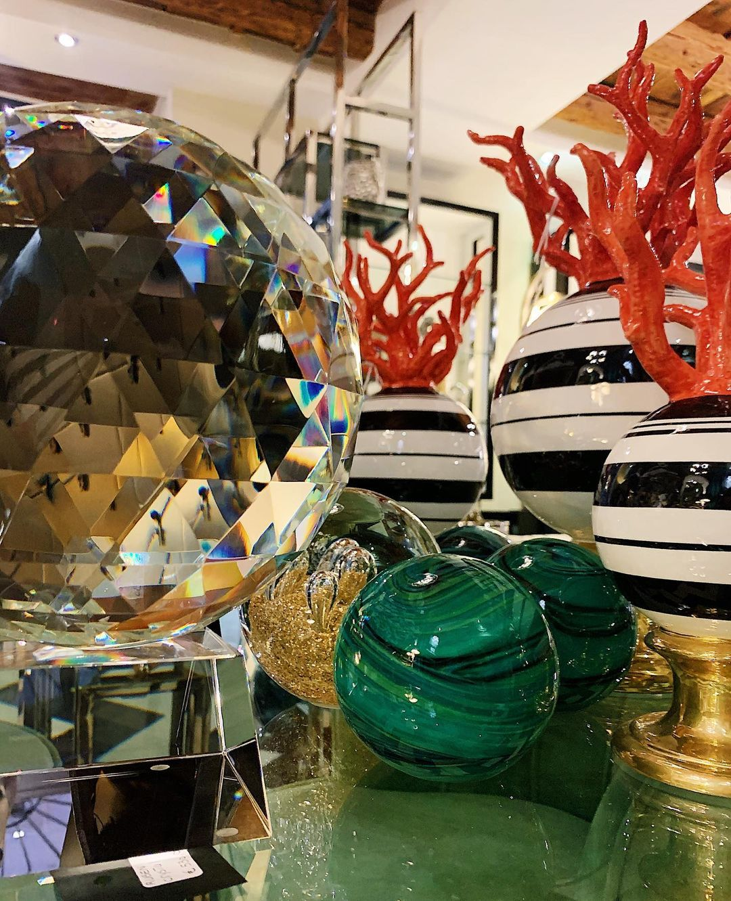

Chi siamo
Sisti interior design: spazio all'individualità
Personalizzare una casa è un 'arte sottile. Ogni casa ha un'anima e per valorizzarla è necessario entrare in contatto con la sua essenza più profonda.
Sabina Sisti ha fatto di quest 'arte un esercizio di stile quotidiano che si materializza nelle sue realizzazioni. Il design Sisti si ispira allo stile Art Déco attualizzato in chiave moderna e interpretato secondo le esigenze della committenza.
Un linguaggio stilistico che trova armonia ed equilibrio tra eleganza e originalità, antico e moderno, essenziale e funzionale.
L'esclusività più autentica si cela nei dettagli. Dalla decorazione fino alla ristrutturazione, la designer Sabina Sisti realizza interni altamente individualizzati, che rendono ogni casa un unicum irripetibile.
Il livello di personalizzazione, elevatissimo, va ben oltre il semplice arredamento arrivando a definire anche aspetti nascosti come le lenzuola e gli asciugamani, impreziositi con particolari unici a richiesta del cliente.
L'architettura d'interni firmata Sisti sperimenta in ogni progetto soluzioni inedite, che includono la scelta dei tessuti, della carta da parati o della tonalità di pittura più adatta al contesto, senza tralasciare lo studio dell 'illuminazione
con le tecnologie più recenti.
L'attenta valutazione degli spazi abitativi permette di disegnare ambienti vivibili e originali, utilizzando mobili su misura ma anche valorizzando i complementi presenti. La creatività della designer Sabina Sisti si esprime anche nella decorazione della
casa per occasioni speciali, come ad esempio tavole impreziosite con oggettistica e fiori, per pranzi o cene davvero indimenticabili.

Dove siamo
Situato nel cuore del Centro Storico di Verona, a due passi da Piazza Erbe, famosa per essere stata anticamente il foro romano della città, si erge lo
Show-room Sisti Interior Design di Sabina Sisti.
All’interno, possono essere apprezzate ambientazioni estratte dal meglio di tanti diversi stili, come Country e Decò, abbinati al classico contemporaneo, il tutto inserito in
una graziosa e magnifica atmosfera quattrocentesca.
Il negozio è comodamente raggiungibile dai mezzi di trasporto pubblico, ed è l’ideale da visitare in una tranquilla passeggiatina per le vie del centro. Consulenza, professionalità
e serietà sono i capisaldi sui quali ogni nostro cliente fa affidamento, e che incontrerete anche voi, qualora decidiate di immergervi nella magia che regala lo Show-room.
.png)